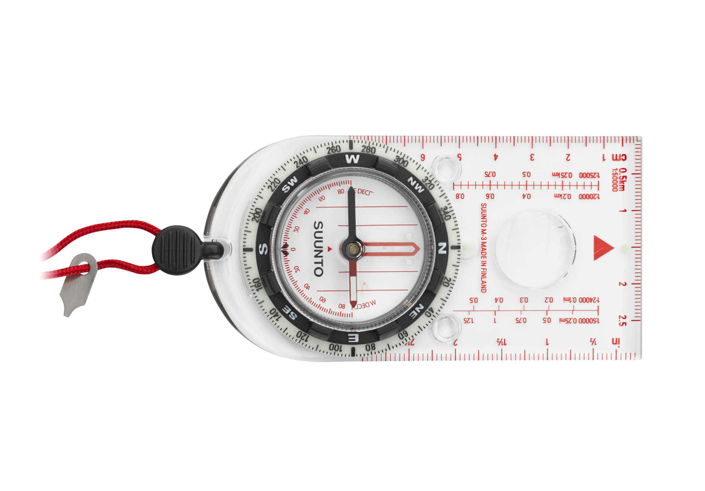

The Modern baseplate compass uses the simple original method of fixing a magnetized needle inside a fluid-filled capsule. The fluid-filled method is still the standard method because of how the fluid dampens the movement of the needle so that it can stabilize quickly when oscillating around directions.
On top of the main function of the compass, many modern recreational and military compasses integrate different functions such as:
On top of the main function of the compass, many modern recreational and military compasses integrate different functions such as:
- A protractor with a separate magnetized needle
- Map orienting lines at the bottom of the compass
- A transparent base underneath compass needle for measuring bearings, so that the tool can be used directly on a physical map
- Scales and sighting mechanisms (mirror, prism, etc.) for measuring distances and positions